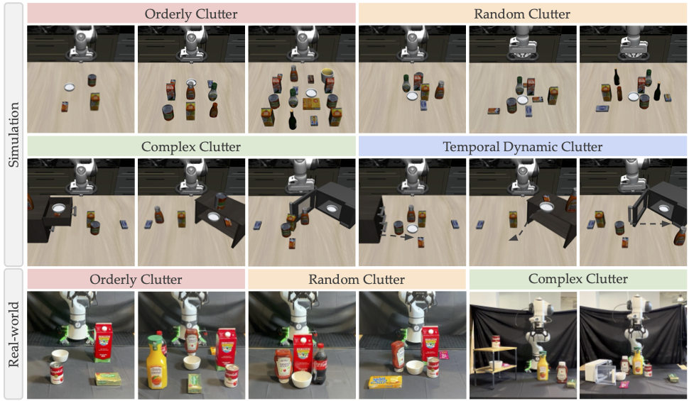

Anonymous Authors
Humans naturally perform manipulation in cluttered environments, reasoning about occlusions, collisions, and constrained motion. However, existing robotic manipulation benchmarks predominantly evaluate performance in sparse and structured scenes — the primary training and evaluation source for modern Vision-Language-Action (VLA) models. As a result, VLA behavior in clutter remains poorly understood.
We introduce ClutterBench, the first benchmark designed to assess VLA manipulation capabilities in cluttered environments, featuring four task categories with increasing difficulty: orderly, random, complex, and temporal dynamic clutter.
We evaluate 7 VLA models in simulation and 3 in the real-world, finding that even the best model achieves below 60% average success rate across all clutter types - revealing fundamental limitations in task understanding, spatial reasoning, and interaction planning. Real-world evaluation confirms that model rankings and dominant failure modes are consistent across platforms.
ClutterBench spans static to dynamic clutter, testing path planning, collision avoidance, manipulation in constrained spaces, and adaptation to unexpected perturbations. All tasks share a common goal: reach a target bowl while avoiding surrounding obstacles.
Top rows: simulated environments across all four task suites.
Bottom row: representative real-world setups for Orderly, Random, and Complex Clutter.

For Temporal Dynamic Clutter, dashed arrows indicate externally induced motions. Each image represents a separate task instance.
Each model evaluated 5× per configuration. Metrics: success rate, non-target object displacement (m), and time steps. Bold = best per class.
| Model | Success Rate ↑ | Obj. Displacement (m) ↓ | Time Steps ↓ |
|---|---|---|---|
| π0.5 | 58.6% | 0.129 | 53.9 |
| π0-FAST | 20.6% | 0.195 | 52.9 |
| OpenVLA | 19.0% | 0.145 | 56.5 |
| OpenVLA-OFT | 16.2% | 0.145 | 58.9 |
| π0 | 7.4% | 0.126 | 59.4 |
| UniVLA | 0.0% | 0.124 | 60.0 |
| WorldVLA | 0.0% | 0.128 | 60.0 |
Only models with official DROID-finetuned checkpoints evaluated. Orderly, Random, and Complex Clutter.
| Model | Level 1 | Level 2 | Level 3 | Avg |
|---|---|---|---|---|
| π0.5-DROID | 60% | 52% | 52% | 54.7% |
| π0-FAST-DROID | 44% | 32% | 36% | 37.3% |
| π0-DROID | 0% | 4% | 0% | 1.3% |
4 models fine-tuned with LoRA using 5 teleoperated demonstrations per configuration (3D SpaceMouse). Zero-shot baseline shown for direct comparison.
| Model | Zero-Shot SR | Fine-Tuned SR ↑ | Obj. Displacement (m) ↓ | Time Steps ↓ |
|---|---|---|---|---|
| π0.5 | 58.6% | 91.2% | 0.127 | 44.8 |
| π0 | 7.4% | 91.0% | 0.127 | 45.2 |
| π0-FAST | 20.6% | 34.8% | 0.130 | 56.1 |
| OpenVLA-OFT | 16.2% | 34.8% | 0.200 | 52.7 |
If you find ClutterBench useful in your research, please cite our paper.